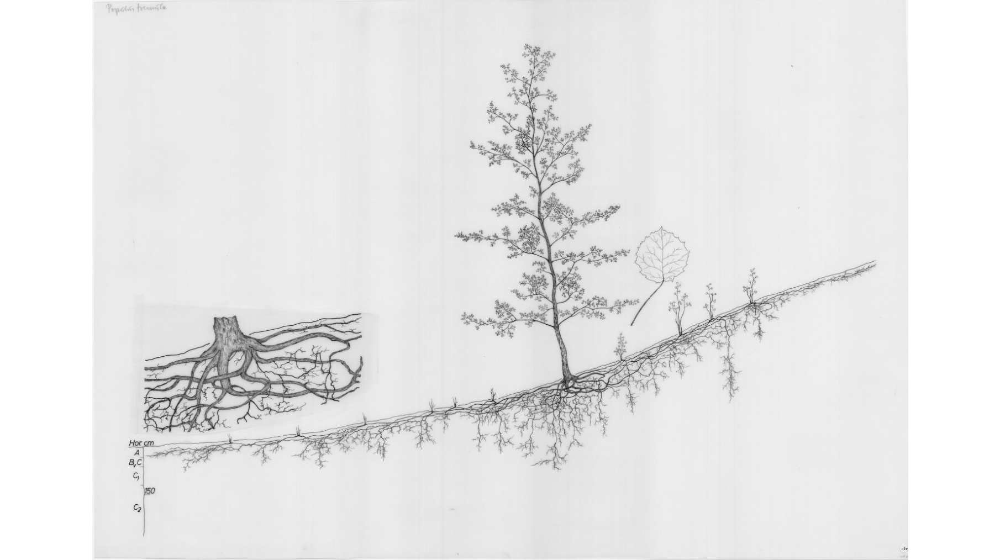

The typical set
👋 I am Rémi (email, twitter)
You've just set foot on the typical set, a subset of my personal notes, my blog, some longform write-ups. Feel free to explore. You can start with what my life is like now, or what I am working on and thinking about now.
I write software…
I am a statistician (some say data scientist) and software engineer working freelance. I am particularly interested in bayesian statistics & generative modeling, mcmc sampling and symbolic computing, which translate into my professional life and the open source projects I contribute to:
- Blackjax is a sampling library built with JAX, focused on ease of use, speed and modularity.
- Aemcmc is a sampling library built with Aesara which builds symbolic samplers from model graphs.
- Aehmc provides implementations of samplers in the HMC family (including NUTS) with Aesara.
- MCX is an experimental PPL, deprecated in favor of Blackjax and Aesara/Aeppl. Read more about MCX.
…dig rabbit holes…
Unlike a traditional blog, most of the notes you will find here are constant work in progress. They form a tightly knit web of related notions. When traditional blogs are engineered, neatly ordered forests, the typical set is more like an aspen grove:

With this experiment I am also trying to figure out how to write useful notes, and how to efficiently navigate between them.
sometimes blog…
Notes that are found in the rabbit hole sometimes coalesce into blog posts. Unlike evergreen notes, blog posts are time-stamped and are thus allowed (sometimes expected) to become stale.
And work on longer pieces
Longer projects aim at being evergreen but are written for others. Updating soon.
Log
I frequently have random thoughts popping up, interesting references that come up, I gather all these in a log in Notion.
This is what I'm currently reading


About this website

These notes are generated with Org-roam, are automatically published with Org Mode. They're infused with a healthy dose of nostalgia for the old web; the design is essentially the same as this motherfucking website, with 4 lines of CSS to improve readability. I was heavily inspired by Andy Matuschak's notes and Neil Mather's digital garden.
This website is forever under construction.